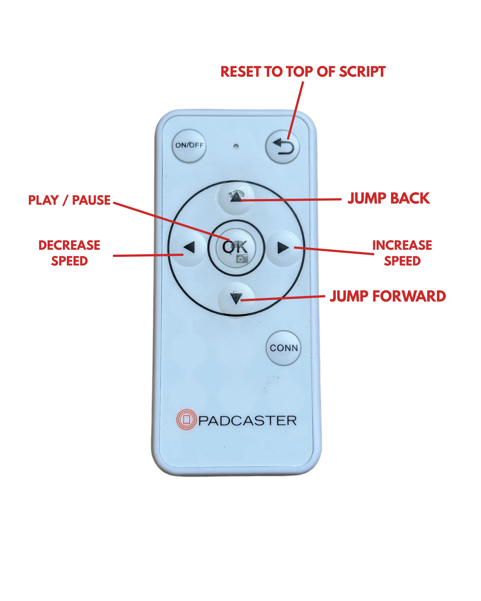

Everything you need to get set up in under two minutes. Whether you're using a phone in a teleprompter rig or a tablet on a stand, this guide covers it all.
Tap Sign In in the top right corner and log in with your Google account. Do this on every device you plan to use (your computer, your phone, your tablet, etc).
Once signed in, any script you save on one device instantly appears on all your other devices. Write a script on your laptop, open the app on your phone, and it's already there waiting for you.
Your settings (speed, font size, margins, mirror mode) are also saved to your account, so every device loads with your preferred setup.
This is important for phones and tablets used as teleprompters. Adding the app to your home screen removes the browser bar and gives you a full-screen experience, just like a native app.
On iPhone/iPad (Safari or Chrome): Tap the Share button (square with an arrow), scroll down, tap "Add to Home Screen", then tap Add.
On Android (Chrome): Tap the three-dot menu in the top right, then tap "Add to Home Screen".
From now on, launch cuecard.studio from your home screen. No browser bar, no distractions, just your script.
You have three ways to get a script into the prompter:
Paste directly: Paste or type your script into the text area. Line breaks and spacing are preserved exactly as you enter them.
From Saved Scripts: If you're signed in, tap any script from your "My Scripts" list to load it instantly.
Via Live Mode: The fastest option for studio use. See Step 5 below.
Auto Scroll scrolls your script at a constant speed. Adjust speed with your remote's left/right arrows. Jump forward or back in the script with up/down arrows.
Cue Card shows one sentence at a time. Tap the right side of the screen (or press your remote) to advance. Tap the left side to go back. Great for natural, conversational delivery.
Hit Start Prompter. The prompter opens in a paused state, giving you time to mount your device in your teleprompter rig. When you're ready, tap the screen or press your remote to begin.
This is the feature that changes your workflow. No more touching your prompter device between takes.
On your prompter device (phone or tablet): Sign in, tap Go Live, and mount it in your rig. It shows a pulsing red dot and waits for a script.
On your computer: Sign in with the same Google account. Paste your script, then hit Send to Prompter.
Your prompter device receives the script instantly and auto-launches into the prompter. It starts paused, waiting for your remote. When you finish a take, it returns to the waiting screen, ready for the next script.
You can keep sending new scripts from your desk without ever touching the prompter device. Update a script, hit Send again, and it refreshes automatically.
Most Bluetooth teleprompter remotes work out of the box, including Padcaster, Parrot, Ikan, Neewer, Desview, and generic models. No special pairing or configuration needed beyond standard Bluetooth.

Padcaster Bluetooth Remote (recommended)
In Cue Card mode, any forward key (right, down, OK, space, enter) advances to the next card, and any back key (left, up) goes to the previous card.
Mirror mode flips the text horizontally for beam-splitter teleprompter setups. Enable it in the Options section before starting.
Margins control how wide the text spans. Narrower margins keep text closer to the center of the screen (and closer to your camera lens), so your eye movement is less noticeable.
Focus Zone adds two subtle lines in the center of the screen so your eyes always know where to look.
Line breaks matter. However you format your script (blank lines between paragraphs, spacing between sections), it will look exactly the same on the prompter.